NLG faithfulness - A literature review
Overview
- Introduction
- Formulating Data-to-Text NLG and faithfulness Data-to-text
- Evaluation
- String-Matching & Correlation-based Methods
- Neural model Methods
- External Knowledge base Methods
- Tricks and Models
- Delexicalization
- Copy Mechanism
- Reranker with fidelity classifier
Introduction
In most NLG tasks, we start with some data and wish to generate texts that communicate the information given. Our data sources range from tables to Wikipedia entries to massive knowledge graphs to enable automatic summarization, intelligent conversational agents and A.I. news reporters. This field of research is broadly termed data-to-text, which, as you may have realized, explores many applications that are still considered to be in the lab phase at the time of writing.
One of the most critical and challenging problems is ensuring that our generation is consistent with the input data, which we will call NLG faithfulness. The least thing you want to hear from your personal assistant is something that is WRONG. In many cases, it might just be easier and safer to present the source data to the user without bothering with generating natural utterances at all.
Faithfulness is particularly challenging to enforce with neural-based approaches because it is hard to interpret neural networks decisions and harder still to explicitly instil faithfulness in large neural models. Of course, you can always introduce more data and hope that your model learns to make fewer mistakes, but NLG happens to be a field where high precision is required because the damage of misinformation almost always outweighs the benefits of truthful ones. You will not be particularly grateful to the assistant on your phone if it tells you the right departure time of your flight, but you will certainly be in fury if it tells you the wrong time leading to a missed flight. Therefore, it is important that we have some assurance that we are generating sensible texts with near-zero error rates.
This makes NLG faithfulness a challenging research problem. In this article, I will briefly formulate the problem and review the current grounds of faithfulness evaluation and modelling approaches.
Formulating NLG and faithfulness
Formulating Data-to-Text
The D2T task is formally defined as generating text T from data D that is encoded via a meaning representation MR.
The MR is typically a text sequence, thus formulating the task into a seq2seq problem. The process from input data to its meaning representation is called linearization
Below is a table of the typical sources of data and their formats
| Data Source | Data Format |
|---|---|
| Knowledge Graph | (subject, relation, object) e.g. (Joe Biden, President, United States) |
| Dialogue Action | {Intent (slot = value), …} e.g. INFORM (name_of_place = Cambridge) |
| Tables | {(Attribute, value), …} pairs e.g. (PlayerName, Lebron James) |
Linearization is typically done by denoting different parts of the data by special tokens, as shown in the following figure from [1]
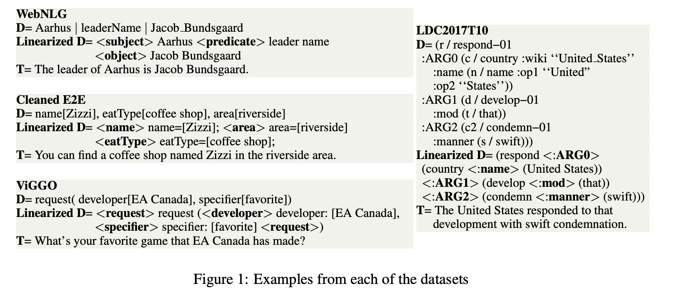
Below is a summary of the typical baseline architecture.
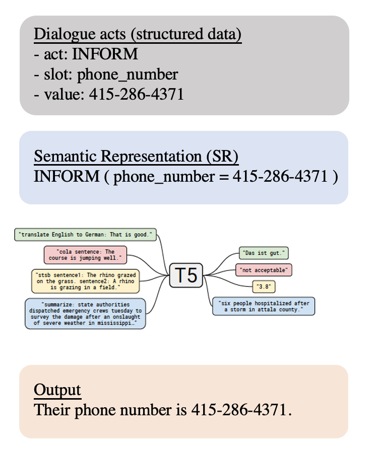There are many ways to linearize the data and more ways still to model the problem, as we will see later. The above is just a baseline.
Formulating faithfulness
Faithfulness essentially means The generation is faithful to the input data. Here are some examples of when the generation is NOT faithful.
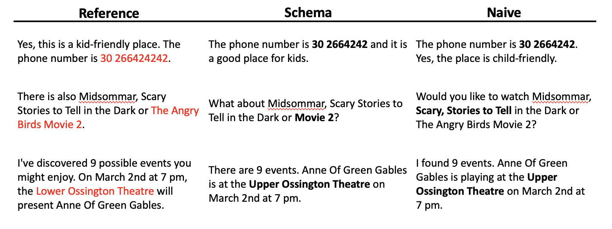
Faithfulness goes by many names: semantic fidelity [1], semantic accuracy [2], factual accuracy [3] and factual consistency [4], etc. Ideally, we should have a discriminative function $f(T, D)$ which tells us whether the text is faithful to the data.
Let’s consider the possible situations (types of error) when faithfulness is violated [2]:
- Omission When the generation fails to verbalize a data entry
- Hallucination When the generation contains information that is not in the input data
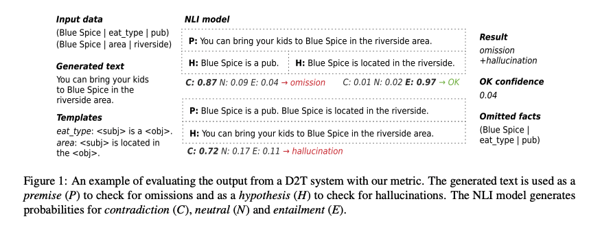
Either omission or hallucination is unacceptable. Our goal is to reduce these errors.
Datasets and Tasks
Data-to-Text: WebNLG
Dialogue System: E2E, Schema Guided Dialogue (SGD)
The examples will primarily come from SGD.
Evaluation
“Machine Translation is a field where more has been written about evaluation.” NLG is similar.
We start from evaluation because without it, you won’t be able to reliably tell how good your model is. It’s like poking around in a dark room without candles.
There are three major approaches to evaluate faithfulness:
- Model-free methods based on string matching and its extension
- Model-based and hybrid methods with NLU or fact extraction capacity
- Natural Language Inference [1, 2]
- Fact extraction [3]
- Question and Answer, with Knowledge Grounding [4]
Model-free approaches based on string matching
By traditional I mean string-matching based methods in the same line as the famous BLEU in Machine Translation.
Slot Error Rate (SER)
SER is typically used for dialogue systems. It can evaluate slots that need to be verbalized exactly. A typical example is phone_number. An utterance is marked as having a slot error if it does not contain the exact strings instructed by the input slots.
| Input dialogue action | Correct utterance | Erroneous utterance |
|---|---|---|
| {‘act’=INFORM, ‘slot’: phone_number’, ‘values’: [‘415-346-2356’]} | You can call them at 415-346-2356. | Their number is 415-346-26. |
Advantages of SER:
- Easy to implement
- A valid lower bound of error
- Strict and interpretable
Disadvantages of SER:
- Cannot detect semantic errors. For example, if
callis replaced withemailin the last example, SER will still mark the utterance as correct - Only covers non-categorical slots. Cannot evaluate boolean slots such as
is_child_friendly=Ture, because a valid utterance may not contain the wordTrueor evenchild friendly. For example, a valid utterance could beThe place is good for kids, where there is no direct word matching at all.
ROUGE
ROUGE, or Recall-Oriented Understudy for Gisting Evaluation, is a set of metrics and a software package used for evaluating automatic summarization and machine translation software in natural language processing. The metrics compare an automatically produced summary or translation against a reference or a set of references (human-produced) summary or translation.
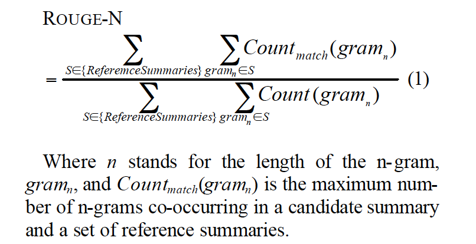This is a recall-related measure since the denominator is the reference n-grams.
BLEU is a precision-based measure. i.e., how well a candidate translation matches a set of reference translations by counting the percentage of the n-gram in the candidate translation overlapping with the references.
Advantage of ROUGE:
- Standard implementation available
- Recall focus reflects ommission problems
Disadvantage of ROUGE:
- Cannot detect semantic error and critical string mismatch (e.g. phone number)
- Higher ROUGE does not strictly correlated with better faithfulness
PARENT
PARENT[5] is a metric for table-to-text tasks. Tables are natrual language descriptions of semi-structured data. Tables can be expressed as set of records $T={r_k}_{k=1}^K$, where each record is a tuple $(entity, attribute, value)$. The task is to generate a text $G$ which summarizes the records in a fluent and grammatical manner. $R$ is the reference provided in the dataset.
PARENT evaluates each instance $(T^i,R^i,G^i)$ separately, by computing the precision and recall of $G^i$ against both $T^i$ and $R^i$
When computing precision, PARENT effectively uses a union of the reference and the table, to reward correct information missing from the reference. When computing recall, it uses an intersection of the reference and the table, to ignore extra incorrect information in the reference. The union and intersection are computed with the help of an entailment model to decide if a text n-gram is entailed by the table.
They propose two entailment models as follows:
Word Overlap Model: Let $\bar T^i$ denote all the lexical items present in the table $T^i$, including both attribute names and their values. Then $w(g)=\sum_{j=1}^n \mathbb{1}(g_j\in \bar T^i)/n$, where $n$ is the length of $g$, and $g_j$ is the $j$th token in $g$
Co-occurrence Model: Originally proposed for the RTE task, this model computes the probability of a term $g_j$ in the n-gram being entailed by the table as the maximum of its probabilities of being entailed by each lexical term $v$ in the table: $Pr(g\Leftarrow T^i)=\max_{v\in T^i}Pr(g_j \Leftarrow v)$
$Pr(g_j \Leftarrow v)$ is estimated using co-occurrence counts from a training set of table-reference pairs. Then the overall probabilty of the n-gram being entailed is taken as the geometric mean $w(g)=\left(\prod_{j=1^n }Pr(g_j\Leftarrow T^i)\right)^{1/n}$
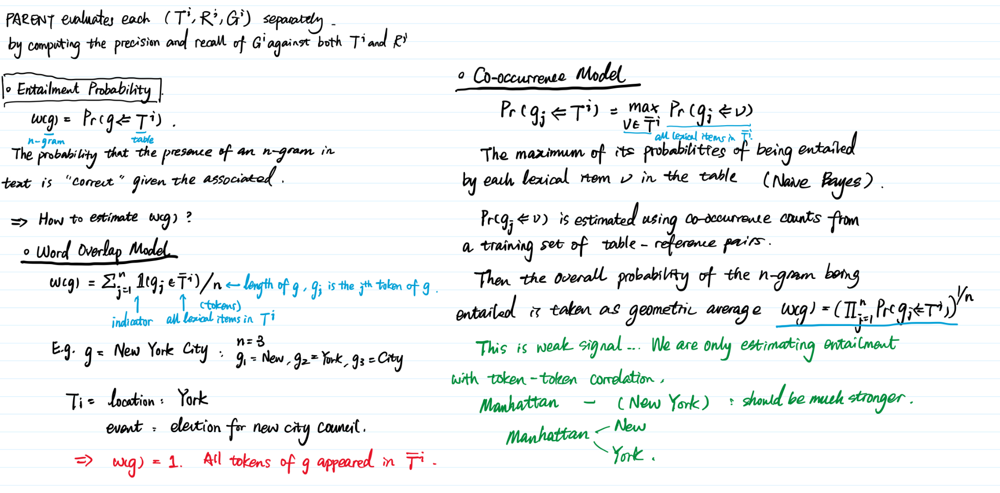
With entailment probability, we can look at how PARENT is computed:
When computing precision, we want to check what fraction of the n-grams in $G^i_n$ are correct. We consider an n-gram $g$ to be correct either if it occurs in the reference $R^i_n$ or if it has a high probability of being entailed by the table (i.e. $w(g)$ is high)
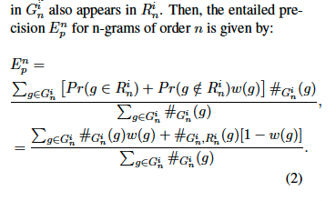
In words, an n-gram receives a reward of 1 if it appears in the reference with probability $Pr(g\in R_n^i)$, and otherwise it receives a reward of $w(g)$. Both numerator and denominator are weighted by the count of the n-gram in $G_n^i$. $Pr(g\in R_n^i)$ rewards an n-gram for appearing as many times as it appears in the reference, not more.
We compute recall against both the reference (Er(Ri)), to ensure proper sentence structure in the generated text, and the table (Er(Ti)), to ensure that texts which mention more information from the table get higher scores (e.g. candidate 3 in Figure 1). These are combined using a geometric average: $E_r = E_r(R^i)^{(1-\lambda)}E_r(T_i)^\lambda$
The parameter $\lambda$ Trades-off how much the generated text should match the reference versus how much it should cover information from the table. The geometric mean, which acts as an AND operation, ensures that the overall recall is high only when both the components are high
When computing Er(Ri), divergent references will have n-grams with low w(g). We want to exclude these from the computation of recall, and hence their contributions are weighted by w(g):
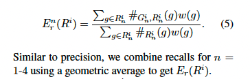
For computing $E_r(T^i)$, note that a table is a set of records $Ti = {rk}^K_{k =1}$. For a record $r_k$, let $\bar r_k$ denote its string value.
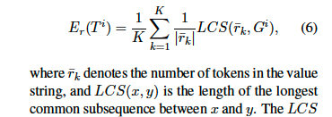
Where LCS is the Longest Common Sequence function implemented with dynamic programming.
Advantages of PARENT:
- The entailment model allows PARENT to recognize possible paraphrases in the dataset
- It explicitly handles divergent references (i.e., when the reference contain information not present in the table) by assigning low entailment probability.
Disadvantages of PARENT:
- The entailment model cannot capture paraphrases outside that occurred in the dataset
- Depending on the dataset, the entailment model might not be accurate (e.g. what if some slots always appear together?)
It is apparent that the entailment model is the weakness of model-free metrics because estimating n-gram entailment itself is a hard NLP problem. Model-based metrics typically use neural-based model as their entailment models. We will look at them in the next section.
Model-based Metrics
Natural Language Inference (NLI) with Pre-trained Language Models
The data-to-text research community is actively exploring neural-based methods, arguing that semantic faithfulness cannot be evaluated without understanding the semantics.
We formulate the problem as testing for entailment between a premise and a hypothesis.
| Test for | Premise | Hypothesis |
|---|---|---|
| Omission | Generation | Linearized Data |
| Hallucination | Linearized Data | Generation |
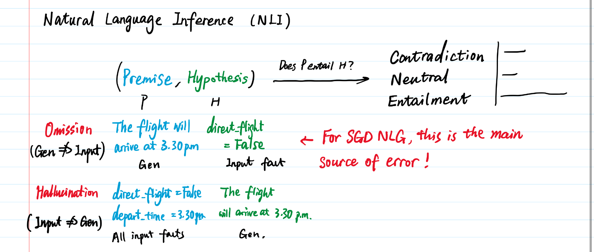
Typical models:
- Pretrained RoBERT roberta-large-mnli, without any fine-tuning [2]
- Fine-tined on specific datasets [1]
Tricks:
- It is critical to linearize the data into a natural sentence if a pretrained model is used without fine-tuning. The effect can be seen if the above link if we leave the MR semi-structured as
OFFER ( Whether the flight is a direct one = False ), versus replacing it withthe flight is indirect. The more fluent latter will elicit the correct response. - If using a templated method to linearize data, note that sentimental qualifiers such as
goodorgreatcannot be entailed by a neutral generation. So it is important to keep the template sentiment consistent with the desirable generation. In most cases, a neutral tone is preferred.
Fact Extraction
If we can recover the data (or facts) in the same schema as the input from the generation, we can then compare the facts entailed by the input and the output directly. To do this, we need a reliable fact extractor. The following examples extract facts from generation as triples.
| Generation | Facts |
|---|---|
| Person1 was born in Country1. He was a painter. | (Person1, born in, Country1), (Person1, profession, painter) |
We can then compare in the fact domain. That is, whether the extracted triples matches the input triples.
There are a few modelling approaches for fact extraction available (it is actually a research problem in its own right), below is just a very brief summary:
- Named Entity Recognition (NER) + Relational Classifier
- NER + Binary Relation Classifier
- End-to-End Extraction
Interested readers are referred to [3] for more details.
Question-Answering Based Methods
Q2 [4] is an automatic metric for evaluating the factual consistency of generative open-domain knowledge-grounded dialogue systems which does not require gold-label reference responses.
- Takes a given generated response as input, and generates questions whose answers are informative spans in the response, using a QG system
- It then employs a QA system to find corresponding answer spans in the knowledge that the response should be grounded in.
- The evaluation score reflects the similarity between each informative response span and its corresponding answer span from the knowledge, for each generated question
Image from [4]. Interested readers are referred to [4] for more details.
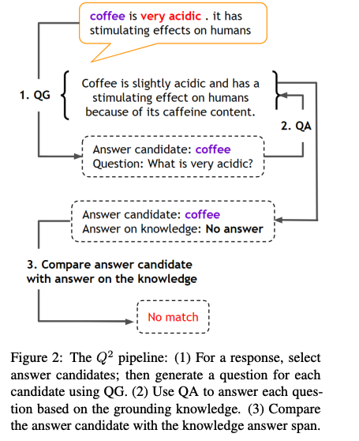This is perhaps more relevant to people in the industry who have access to knowledge-grounded QA systems (e.g. large knowledge graph).
Tricks and Models
Delexicalization
For literal values that need to appear in the generation, it is common to delexicalize them by substituting the literal values with a special token and ask the model to generate that token when appropriate. We can turn substitute the special token with the value in the data after generation. This ensures that the value is exactly the same as that in the data. For example:
| Dialogue Acts | Reference | Delex-Reference | Generation |
|---|---|---|---|
| [{‘act’:INFORM, ‘slot’: ‘phone_number’, ‘values’: [‘415-346-2356’]}] | You can call them at 415-346-2356 | You can call them at |
Their phone number is |
The final generation is obtained by substituting
This is one of the most common and effective tricks in many NLG competitions [7]. It also handles the problem of open-vocabulary because combinations of numbers and names are collapsed to their respective special tokens.
Copy Mechanism
Apart from delexicalisation, which is most often used in the E2E NLG Challenge, various variants of the copy mechanism are the most prominent approach to address open vocabulary in NLG (Wiseman et al., 2017; Lebret et al., 2016; Bao et al., 2018; Kaffee et al., 2018; Wang et al., 2018). [7]
There are a number of approaches to incorporate copy mechansim in sequence-to-sequence tasks. One of the most used architecture is called Pointer-generator network that directly models the probability of copying [8, 9].
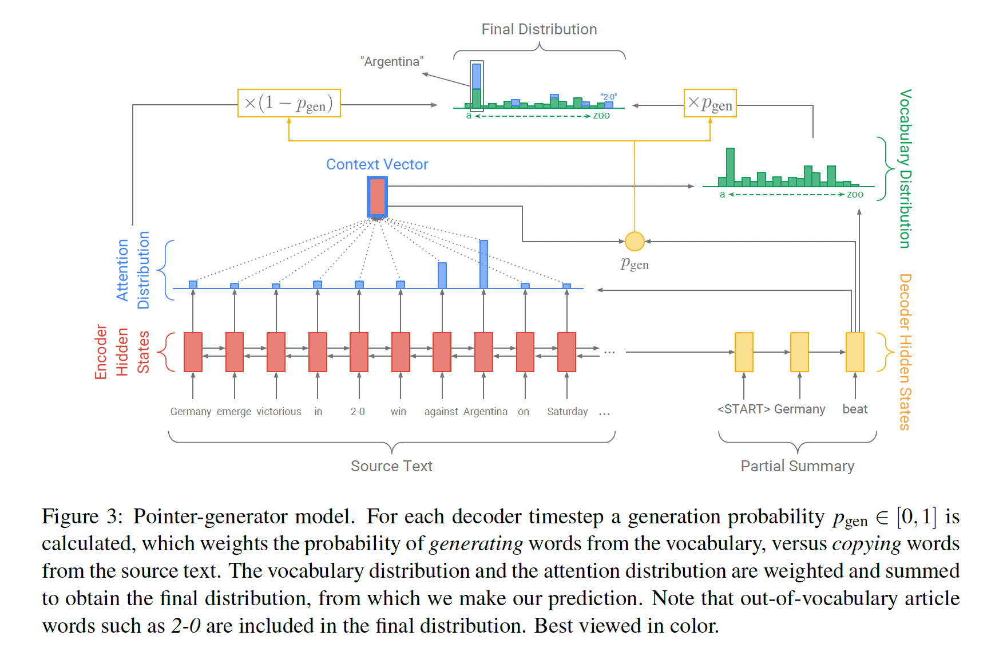
Essentially, the model learns to generate an attention distribution to model the copying distribution, which is input tokens; probability of being copied to the output at this time instance. This copying distribution is weighted by a scaler $p_{gen}$ to give a valid probability distribution after combining with the vocabulary output distribution. $p_{gen}$ indicates the probability that the generated token at time $t$ should be copied from the input.
Interested readers are referred to [8] for details.
Fidelity Reranker
A fidelity reranker introduces scores that reflect NLG faithfulness during beam search. It will require a probabilistic or deterministic model that determine whether the generation candidate is faithful to the input data. We introduce the approach in [1] in some details below, which will cover the main ideas and implementation tricks for such a reranker.
In [1], a Semantic Fidelity Classifier (SFC) is trained.
SFC Training data augmentation SFC’s training data should consist of semantically faithful and semantically incorrect examples. We generate training data for the SFC automatically from the training data of the main D2T task. We define a set of simple dataset-independent transformations that account for common errors in data-to-text generation. For each tuple $(D_i, T_i)$ in the training data, we split the text Ti into sentences, using the spaCy sentence tokenizer (Honnibal and Montani, 2017). We then generate a set of new tuples for the SFC consisting of $(D_i, T_j , l)$ for each of the labels l below, generated as follows:
• Accurate: This is the text Ti. • Omission: Remove the shortest sentence in $T_i$ (to help detect subtle omissions).• Repetition: Take a random sentence in $T_i$ and insert it before another random sentence in $T_i$. • Hallucination: Select a random sentence from another training text $T_j\neq i$ and insert it before a random sentence in $T_i$. • Value Errors: Select a random value x that occurs verbatim in both $D_i$ and $T_i$, and replace x in $T_i$ with a random other value from $D_i$. For slot-based MR (Cleaned E2E and ViGGO), x is selected from the slots’ values. For graph-based MR (LDC2017T10), x is selected from the graph’s leaves. For RDF triples (WebNLG dataset), x is chosen from the triples’ subjects and objects.
Model of SFC SFC uses a RoBERTa as its base model with a classification head and segment embeddings to distinguish data and text.
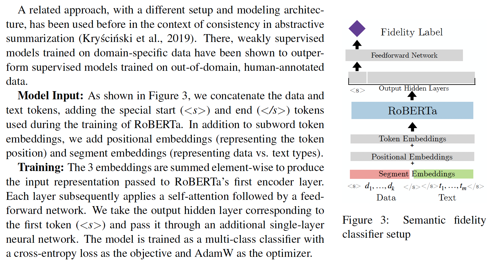Decoding with SFC At the end of the beam-search, we use the SFC to rerank the complete candidates (terminated with an end-of-sequence token) in the beam. The reranking metric uses the following binary score: $\mathbb 1\left( SFC(D_i,T_i)\right)=\text{“accurate”}.$
The downside of fidelity reranker is that if the faithful candidate never appears during beam search, then the SFC would be useless.
Conclusion
This completes my brief review on the topic of NLG faithfulness. By the time of this writing (March. 2022), the problem is far from being solved.
Here I have not reviewed research in summarization, where the text is produced in a staged manner from content selection to generation. It will include some direct modeling on the grounded knowledge/information.
I hope the article has been useful for people interested in the topic!
References
[1] Have Your Text and Use It Too! End-to-End Neural Data-to-Text Generation with Semantic Fidelity
[2] Evaluating Semantic Accuracy of Data-to-Text Generation with Natural Language Inference
[3] Assessing The Factual Accuracy of Generated Text
[5] Towards Scalable Multi-Domain Conversational Agents: The Schema-Guided Dialogue Dataset
[6] Handling Divergent Reference Texts when Evaluating Table-to-Text Generation
[7] Evaluating the state-of-the-art of End-to-End Natural Language Generation: The E2E NLG challenge
[8] Get To The Point: Summarization with Pointer-Generator Networks
[9] Self-Attention Guided Copy Mechanism for Abstractive Summarization
Jinghong Chen @2021-2022